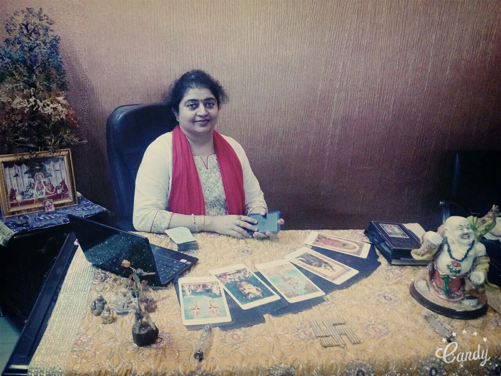

AT A GLANCE
COURSES
Complete workshop as well as basic and advance courses of all occult sciences that helps you to explore and guide your life with full awareness.
SERVICES
We provide you with the best services regarding predictions and remedies in the field of astrology, numerology, tarot card, vastushastra,Kp (Nadi),etc.
Blog
Get to know about the daily thoughts of the astrologer . Take your step ahead; ask and discuss daily about the various upcoming topics.
Acharya dr. shalini behl
Acharya Dr Shalini Behl is a vedic astrologer, a tarot card reader and a vastushasrtra consultant.
She has been practicing for the last 12 years. She is a post graduate(MA) in English and did PHD in astrology.
She is blessed with the art of identifying negative energy. She has successfully helped people in achieving their aims and suggesting right path of their lives.
She has a wide spectrum of knowledge about various forms of occult sciences.
-

TESTIMONIALS
Know What People Say
Latest Updates
Diwali Lakshmi Poojan
SPECIAL DIWALI POOJA This SPECIAL DIWALI POOJA is done under my supervision and then lastly by myself. The Pooja is done on a large scale once a year with a hope that you attain success and bliss with every light that is lit on the day of Diwali Collect the pooja offerings and[…]
Importance of karvachauth
करवा चौथ विशेष 19 अक्टूबर क्योंकि 100 साल बाद आया है ऐसा करवाचौथ सुहागिनें हर साल अपने पति की लंबी उम्र की कामना में करवाचौथ का व्रत रखती हैं. लेकिन इस बार करवाचौथ कुछ खास है. करवाचौथ पर पूरे सौ साल बाद ऐसा दुर्लभ संयोग बन रहा है. ज्योतिष के जानकारों की मानें तो इस[…]
Karvachauth Special
+++करवा चौथ व्रत कथा व पूजा महूर्त +++ कार्तिक माह के कृष्ण पक्ष की चतुर्थी तिथि को करवा चौथ का व्रत किया जाता है। इस दिन विवाहित महिलाएं अपने पति की लंबी आयु के लिए निर्जला व्रत रखती हैं। करवा चौथ के व्रत का पूर्ण विर्ण वामन पुराण में किया गया है। […]
Ganesh Chaturthi
दो दिन रहेगा चंद्र दर्शन का निषेध| इस बार 4 सितंबर की शाम को 6.54 बजे से चतुर्थी प्रारम्भ हो जायेगी और 5 सितंबर को रात्रि 9.09 तक चतुर्थी रहने के कारण चंद्र दर्शन का निषेध रहेगा| माघ शुक्ल चतुर्थी गणेश जी का जन्म दिवस होता है परंतु भाद्रपद शुक्ल चतुर्थी को गणेशोत्सव मनाया जाता[…]

Thought Of The Day
#SmilingSunday

Thought Of The Day
#SpiritualSaturday

Thought Of The Day
#ForgivingFriday

Thought Of The Day
#ThrilingThursday

Thought Of The Day
#WowWednesday

Thought Of The Day
#ThankfulTuesday